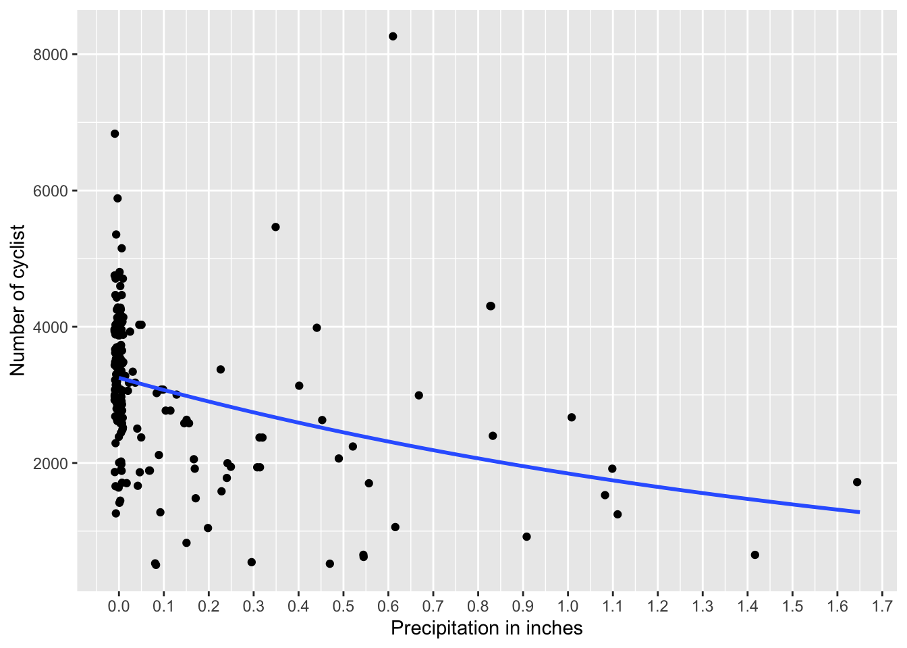

Chapter 13 Area chart with geom_area
13.1 Area Chart Section
The area chart is analogous to a histogram or bar chart. The figure below shows how the quantity in X changes in frequency with respect to Y throughout the range of the variable X. Note below that the data is not grouped into bars as when using geom_histogram but represented as a continuous area. Note that unlike a histogram, the frequency changes are smoothed and not discrete.
DW=dipodium
DW=clean_names(DW)
a=ggplot(DW, aes(distance))
a+geom_area(stat="bin", fill="aquamarine", color="black")+
labs(x="Distancia (m) al arbol más cercano", y="Frecuencia")+
theme(axis.title=element_text(size=10,face="bold"))
In this following graph, the color of the line that follows the contour of the area is changed. To make this change you can identify the type of line with linetype, the color with color, the thickness of the line with size and the intensity of the color with alpha.
a=ggplot(DW, aes(distance))
a+geom_area(stat="bin", fill="steelblue1",
linetype="twodash", color="black", size=0.5, alpha=0.1)+
labs(x="Distancia", y="Frecuencia")+
theme(axis.title=element_text(size=10,face="bold"))13.1.1 linetype types
See “linetype” alternatives at this link linetype. Some of these lines can be called using a name “blank”, “solid”, “dashed”, “dotted”, “dotdash”, “longdash”, “twodash”, or numbering “1F”, “F1”, “4C88C488”, “12345678.
par(mar=c(0,0,0,0))
# Set up the plotting area
plot(NA, xlim=c(0,1), ylim=c(10.5, -0.5),
xaxt="n", yaxt="n",
xlab=NA, ylab=NA )
# Draw the lines
for (i in 0:10) {
points(c(0.25,1), c(i,i), lty=i, lwd=2, type="l")
}
# Add labels
text(0, 0, "0. 'blank'" , adj=c(0,.5))
text(0, 1, "1. 'solid'" , adj=c(0,.5))
text(0, 2, "2. 'dashed'" , adj=c(0,.5))
text(0, 3, "3. 'dotted'" , adj=c(0,.5))
text(0, 4, "4. 'dotdash'" , adj=c(0,.5))
text(0, 5, "5. 'longdash'", adj=c(0,.5))
text(0, 6, "6. 'twodash'" , adj=c(0,.5))
text(0, 7, "6. '1F'" , adj=c(0,.5))
text(0, 8, "6. 'F1'" , adj=c(0,.5))
text(0, 9, "6. '4C88C488'" , adj=c(0,.5))
text(0, 10, "6. '12345678'" , adj=c(0,.5))
Now in the following graph, the color of the line is changed to black while the style of the line is changed with linetype and its thickness with size.
a=ggplot(DW, aes(distance))
a+geom_area(stat="bin", fill="steelblue1",
linetype="4C88C488", color="black", size=.5, alpha=0.5)+
labs(x="Distancia", y="Frecuencia")+
theme(axis.title=element_text(size=10,face="bold"))
13.2 geom_area with multiple groups
Finally, the following graph shows the data on the frequency of hospital beds per 1,000 inhabitants in different years.
## Pais Year Poblacion Camas
## 129 Turkey 2006 68704721 2.7000
## 130 Turkmenistan 2006 4801594 4.3331
## 131 Ukraine 2006 46787750 8.7000
## 132 United States 2006 298379912 3.1000
## 133 Uruguay 2006 3331041 2.9000
## 134 Yemen, Rep. 2006 21093973 0.7000a=ggplot(Camas_Hospital, aes(Camas, fill=factor(Year)))
a+geom_area(stat="bin",bins=60, alpha=0.5)+
xlab("Número de camas por \n cada 1000 habitantes")+
ylab("Frecuencia")+
scale_y_continuous(breaks=c(0,1,2,3))+ # Cambio en la escala de eje
scale_x_continuous(breaks=c(0:15))+
theme(axis.title=element_text(size=10,face="bold"))+
facet_wrap(~Year)
## # A tibble: 2 × 2
## # Groups: Year [2]
## Year n
## <int> <int>
## 1 1996 67
## 2 2006 6713.3 The density function aes(y=..density..)
One can use the stat option while identifying the Y axis to display the density and not the frequency of the data with the following modification aes(y=..density..) . This changes the graph’s display to density in the data instead of showing the count/frequency for each group. If one compares the two previous graphs to these new graphs one observes that the density of hospital beds per 100,000 changed with the years of inhabitants, there was an increase in density (proportionally more beds in 2006 per inhabitants). Note that there is no peak near one in 1996, but in 2006 the distribution is more dispersed among the values and not concentrated near one.
## Pais Year Poblacion Camas
## 1 Armenia 1996 3173425 7.1300
## 2 Australia 1996 18311000 8.5000
## 3 Austria 1996 7959017 9.3000
## 4 Azerbaijan 1996 7763000 9.8100
## 5 Bahamas, The 1996 283792 3.9400
## 6 Barbados 1996 265940 7.5600
## 7 Belarus 1996 10160000 12.2700
## 8 Belize 1996 213674 2.1300
## 9 Bolivia 1996 7717445 1.6700
## 10 Bulgaria 1996 8362826 10.4700
## 11 Burkina Faso 1996 10372809 1.4200
## 12 Canada 1996 29671900 4.6000
## 13 Chile 1996 14396020 2.6700
## 14 China 1996 1217550000 2.5500
## 15 Colombia 1996 38049040 1.4600
## 16 Costa Rica 1996 3596733 1.7500
## 17 Croatia 1996 4494000 6.1900
## 18 Cuba 1996 10955372 5.1300
## 19 Egypt, Arab Rep. 1996 63595629 2.1000
## 20 El Salvador 1996 5643363 1.6500
## 21 Estonia 1996 1415594 7.9000
## 22 Finland 1996 5124573 9.2000
## 23 France 1996 59753098 8.8000
## 24 Georgia 1996 4616100 5.6700
## 25 Germany 1996 81914831 9.6000
## 26 Greece 1996 10608800 4.9000
## 27 Guyana 1996 730193 3.8700
## 28 Hungary 1996 10311238 8.8000
## 29 Iran, Islamic Rep. 1996 61306632 1.6000
## 30 Ireland 1996 3637510 5.1000
## 31 Israel 1996 5692000 6.0300
## 32 Italy 1996 56860281 6.5000
## 33 Jamaica 1996 2509923 2.1200
## 34 Japan 1996 125757000 15.2000
## 35 Kazakhstan 1996 15577894 10.3300
## 36 Korea, Rep. 1996 45524681 4.6000
## 37 Kyrgyz Republic 1996 4628400 8.4100
## 38 Latvia 1996 2457222 10.4400
## 39 Lithuania 1996 3601613 10.8800
## 40 Macedonia, FYR 1996 1958303 5.2000
## 41 Malaysia 1996 21260881 2.0100
## 42 Malta 1996 372687 5.7800
## 43 Mexico 1996 96181710 1.2000
## 44 Moldova 1996 3667748 12.1300
## 45 Nepal 1996 21902534 0.1600
## 46 Nicaragua 1996 4700777 1.4800
## 47 Norway 1996 4381336 4.0000
## 48 Paraguay 1996 4870695 1.3400
## 49 Poland 1996 38624370 5.5000
## 50 Portugal 1996 10063945 4.0000
## 51 Romania 1996 22619004 7.5600
## 52 Russian Federation 1996 148160042 11.6300
## 53 Slovak Republic 1996 5373361 8.3000
## 54 Slovenia 1996 1988628 5.6600
## 55 Spain 1996 39478186 4.3000
## 56 St. Lucia 1996 148962 3.3800
## 57 Suriname 1996 453653 3.7400
## 58 Syrian Arab Republic 1996 14736209 1.5000
## 59 Tajikistan 1996 5862224 7.4700
## 60 Trinidad and Tobago 1996 1258365 5.1100
## 61 Tunisia 1996 9089300 2.0000
## 62 Turkey 1996 59451488 2.5000
## 63 Turkmenistan 1996 4267690 8.0100
## 64 Ukraine 1996 51057189 10.8400
## 65 United States 1996 269394000 3.9000
## 66 Uruguay 1996 3248039 4.3900
## 67 Yemen, Rep. 1996 15834747 0.6900
## 68 Armenia 2006 3002161 4.4000
## 69 Australia 2006 20697900 3.9700
## 70 Austria 2006 8268641 7.6496
## 71 Azerbaijan 2006 8484550 8.1000
## 72 Bahamas, The 2006 335801 3.2000
## 73 Barbados 2006 275040 6.6000
## 74 Belarus 2006 9604000 11.2000
## 75 Belize 2006 290751 1.3000
## 76 Bolivia 2006 9283345 1.1000
## 77 Bulgaria 2006 7699020 6.2000
## 78 Burkina Faso 2006 13834195 0.9000
## 79 Canada 2006 32570505 3.4000
## 80 Chile 2006 16279728 2.3000
## 81 China 2006 1311020000 2.2300
## 82 Colombia 2006 43835744 1.0000
## 83 Costa Rica 2006 4308790 1.3000
## 84 Croatia 2006 4440000 5.5000
## 85 Cuba 2006 11275199 4.9000
## 86 Egypt, Arab Rep. 2006 76274285 2.1020
## 87 El Salvador 2006 5967556 0.9000
## 88 Estonia 2006 1346810 5.6000
## 89 Finland 2006 5266268 7.0000
## 90 France 2006 63621376 7.2000
## 91 Georgia 2006 4136000 3.7000
## 92 Germany 2006 82376451 8.3000
## 93 Greece 2006 11020362 4.8000
## 94 Guyana 2006 743705 2.5000
## 95 Hungary 2006 10071370 7.9000
## 96 Iran, Islamic Rep. 2006 70923164 1.4000
## 97 Ireland 2006 4273591 5.3000
## 98 Israel 2006 7053700 6.0000
## 99 Italy 2006 58143979 3.9000
## 100 Jamaica 2006 2653042 2.0000
## 101 Japan 2006 127854000 13.9800
## 102 Kazakhstan 2006 15308084 7.8000
## 103 Korea, Rep. 2006 48371946 8.6400
## 104 Kyrgyz Republic 2006 5218400 5.1000
## 105 Latvia 2006 2218357 7.6000
## 106 Lithuania 2006 3269909 8.0000
## 107 Macedonia, FYR 2006 2047330 4.6000
## 108 Malaysia 2006 26263048 1.9000
## 109 Malta 2006 405308 7.6129
## 110 Mexico 2006 111382857 1.6000
## 111 Moldova 2006 3585209 6.3000
## 112 Nepal 2006 25794344 5.0000
## 113 Nicaragua 2006 5450217 1.0000
## 114 Norway 2006 4660677 4.1000
## 115 Paraguay 2006 5882797 1.3000
## 116 Poland 2006 38141267 5.2000
## 117 Portugal 2006 10522288 3.5000
## 118 Romania 2006 21193760 6.5000
## 119 Russian Federation 2006 143049528 9.7000
## 120 Slovak Republic 2006 5373054 6.8100
## 121 Slovenia 2006 2006868 4.8000
## 122 Spain 2006 44397319 3.4000
## 123 St. Lucia 2006 167656 2.9000
## 124 Suriname 2006 495953 3.3000
## 125 Syrian Arab Republic 2006 18728200 1.4000
## 126 Tajikistan 2006 6949566 6.1000
## 127 Trinidad and Tobago 2006 1303141 2.7000
## 128 Tunisia 2006 10127900 1.9000
## 129 Turkey 2006 68704721 2.7000
## 130 Turkmenistan 2006 4801594 4.3331
## 131 Ukraine 2006 46787750 8.7000
## 132 United States 2006 298379912 3.1000
## 133 Uruguay 2006 3331041 2.9000
## 134 Yemen, Rep. 2006 21093973 0.7000a=ggplot(Camas_Hospital, aes(Camas, fill=factor(Year)))
a+geom_area(aes(y=..density..),stat="bin", alpha=0.5)+
xlab("Número de camas por cada 1000 habitantes")+
ylab("Densidad")+
theme(axis.title=element_text(size=10,face="bold"))
13.3.1 geom_area Options and Parameters:
ggplot (the data file, aes(the continuous variable)) +geom_area(stat= bin, x, y, alpha, color, fill, linetype, size)
- alpha: the intensity of the color
- color: the color of the line around the area
- fill: the color of the area
- linetype: represents the line style
- size: represents the thickness of the line +stat: The default method is {identity}, which represents the data, or statistical transformation
13.4 Density plot with geom_density
A density plot, also known as a probability density function, pdf or probability density function in English, is used with variables that contain continuous data. The density function is continuous over the range of values, and the sum of all the probabilities is equal to one. We saw previously that you can visualize the density also with geom_area and geom_histogram. The geom_density function facilitates the production of the graph and expands the alternatives as explained shortly.
13.4.1 What is a kernel?
Estimating the density of data in a graph requires selecting a parameter, a kernel, to smooth the distribution. The most used is the Gaussian, which represents the normal distribution or commonly known as the bell-shaped distribution. If you do not specify which kernel to use, the normal distribution is the default; for example, when geom_density() is specified without any other options.
Another alternative is to use geom_density(kernel = c(kernel={gaussian}), or other alternatives. Other parameters for kernel are:
- rectangular,
- triangular,
- epanechnikov,
- biweight,
- cosine,
- optcosine,
- gaussian
The kernel is a special type of probability density function that has certain specific properties, whether it is non-negative and real-valued such that the graph is symmetrical, and the sum of the integral is equal to one. Also added geom_density to compare the result of the two functions.
Note that in the following graph the parameter alpha=0.4 was used. This modifies the transparency of the blue color of the fill=blue parameter. The intensity of alpha=0.4 can vary from 0 to 1, as explained above. The example below uses Dipodium rosea data again.
a=ggplot(DW, aes(distance))
a+geom_area(aes(y=..density..),stat="bin", alpha=0.5)+
geom_density(kernel = c(kernel="gaussian"),
alpha=0.4, fill="blue")+
labs(x="Distancia", y="Densidad")+
theme(axis.title=element_text(size=10,face="bold"))## Warning: `data_frame()` was deprecated in tibble 1.1.0.
## ℹ Please use `tibble()` instead.
## This warning is displayed once every 8 hours.
## Call `lifecycle::last_lifecycle_warnings()` to see where this warning was
## generated.a=ggplot(x, aes(x))
a+geom_area(aes(y=..density..),stat="bin", alpha=0.5)+
geom_density(kernel = c(kernel="gaussian"),
alpha=0.4, fill="blue")+
labs(x="valus", y="Densidad")+
theme(axis.title=element_text(size=10,face="bold"))## `stat_bin()` using `bins = 30`. Pick better value with `binwidth`.
13.5 geom_density and simulated data
The role of geom_density can be better understood by evaluating it with simulated data. Let’s next simulate data with different sample sizes to visualize the densities. In the simulation below, 4 data frames are created with 2000, 500, 50 and 10 data respectively with the rnorm function. Naturally, what is observed is that if the data comes from a normal distribution, the more data that is included, the closer the corresponding distribution is to what a normal distribution should look like. But, the opposite is that with little data, the density is likely not to resemble the theoretical (normal) distribution.
a=rnorm(20000, 0, 1)
a=as.data.frame(a)
a=ggplot(a, aes(a))+
geom_density(kernel = c(kernel="gaussian"),
alpha=0.4, fill="yellow")+
labs(y="Densidad")+
theme(axis.title=element_text(size=10,face="bold"))
b=rnorm(500, 0, 1)
b=as.data.frame(b)
b=ggplot(b, aes(b))+
geom_density(kernel = c(kernel="gaussian"),
alpha=0.4, fill="red")+
labs(y="Densidad")+
theme(axis.title=element_text(size=10,face="bold"))
c=rnorm(50, 0, 1)
c=as.data.frame(c)
c=ggplot(c, aes(c))+
geom_density(kernel = c(kernel="gaussian"),
alpha=0.4, fill="blue")+
labs(y="Densidad")+
theme(axis.title=element_text(size=10,face="bold"))
d=rnorm(10, 0, 1)
d=as.data.frame(d)
d=ggplot(d, aes(d))+
geom_density(kernel = c(kernel="gaussian"),
alpha=0.4, fill="grey")+
labs(y="Densidad")+
theme(axis.title=element_text(size=10,face="bold"))
13.5.1 geom_density Options and Parameters:
ggplot(the data file, aes(the continuous variable))
- geom_density(kernel= {…}), x, y, alpha, color, fill, linetype, size, weight
- ***** represents the desired parameter; e.g. gaussian, triangular, rectangular, etc.
- alpha: the intensity of the color
- fill: the color of the area
- color: the color of the line around the area
- linetype: represents the line style
- size: represents the thickness of the line
- weight: to modify the original value; then it would not be, for example, the count or sum of the values but a weighted value (weighted average)
- geom_density(kernel= {…}), x, y, alpha, color, fill, linetype, size, weight
13.6 Polygon frequency graph with geom_freqpoly
The polygon frequency graph is similar to the area and density graph, the difference is that the area is not filled with color. You can also change the number of bins using binwidth. In the polygon plot, it is only the line that we plot and there is no fill parameter of the area below the line.
a=ggplot(DW, aes(distance))
a+geom_freqpoly(binwidth=.1, color="#e3cc36")+ # Nota como seleccionar el color con "color picker" en el web.
labs(x="Distancia (m)", y="Frecuencia")+ # labels = labs
theme(axis.title=element_text(size=14,face="italic"))Modify other options as follows: color intensity with alpha, line type with linetype and line thickness with size as shown below.
DW%>%
drop_na()%>%
ggplot(aes(distance, colour=species_name))+
geom_freqpoly(alpha=1.0, size=1.0, binwidth=.1, linetype="longdash")+
labs(x="Distancia", y="Frecuencia")+
theme(axis.title=element_text(size=14,face="bold"))
## # A tibble: 1,363 × 21
## tree_number tree_species dbh plant_number ramet_number distance orientation
## <int> <chr> <dbl> <int> <int> <dbl> <dbl>
## 1 1 E.o 75 1 1 2.47 40
## 2 1 E.o 76 2 1 1.97 50
## 3 2 E.o 76 3 1 1.95 350
## 4 3 E.o 58 4 1 3.24 210
## 5 4 E.o NA 5 1 0.85 80
## 6 5 E.o 59 6 1 2.62 160
## 7 5 E.o 59 7 1 2.82 170
## 8 6 E.o 8 8 1 3.12 245
## 9 7 E.o 11.5 9 1 1.12 208
## 10 8 E.o 8.5 10 1 0.75 360
## # ℹ 1,353 more rows
## # ℹ 14 more variables: number_of_flowers <int>, height_inflo <int>,
## # herbivory <chr>, row_position_nf <int>, number_flowers_position <int>,
## # number_of_fruits <int>, perc_fr_set <dbl>, pardalinum_or_roseum <chr>,
## # fruit_position_effect <int>, frutos_si_o_no <int>,
## # p_or_r_infl_lenght <chr>, num_of_fruits <int>, species_name <chr>,
## # cardinal_orientation <int>13.6.1 Opciones y Parametros de geom_freqpoly
ggplot(the data file, aes(the continuous variable))
- geom_freqpoly(stat={bin}, x, y, alpha, color, linetype, size)
- alpha: the intensity of the color
- color: the color of the line around the area +linetype: represents the line style; see section
- size: represents the thickness of the line
- Activity
Use the “dipodium” data set in the “ggversa” package. Presents a graph of the frequency of flowers per plant with geom_freqpoly.
- Change the color of the line
- Change axis information for more relevant text
- Change the color intensity of the line
- Change the line type